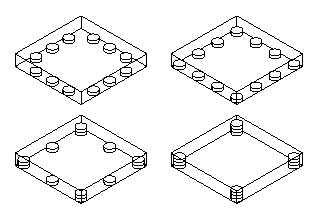

Is it possible to place 12 identical coins along the edges of a square box so that touching each edge there were exactly:
a) 2 coins
b) 3 coins
c) 4 coins
d) 5 coins
e) 6 coins
f) 7 coins
You are allowed to place coins on top of one another. In the cases where it is possible, draw how this could be done. In the other cases, prove that doing so is impossible.
a) Since by definition all of the coins must lie touching an edge of the box, but each edge can touch only two coins, the total number of coins can be no greater than 8.
b)-e) Examples of the required arrangements are shown on the drawings below

f) Notice that a coin cannot touch two opposite edges of the box at the same time. Therefore the total number of coins touching two opposite edges will be $7+7=14>12$
a) and f) - no; b), c), d), and e) - yes.